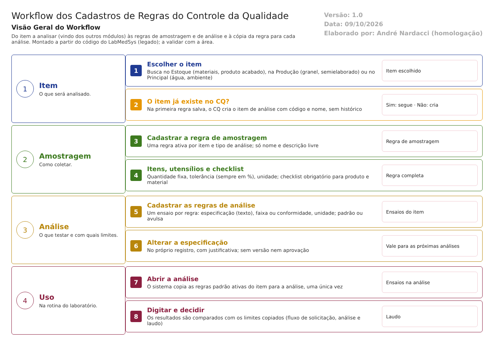

Objetivo
Este documento descreve os cadastros que definem o que o Controle da Qualidade amostra e analisa: a Regra de Amostragem (quanto coletar, com que tolerância, com quais utensílios e qual checklist), a Regra de Análise (quais ensaios, com qual especificação e quais limites) e os cadastros de apoio Unidade de Medida e Motivos. São esses cadastros que decidem se um laudo está certo: um limite errado aprova ou reprova o lote errado.
Foi montado a partir do código do sistema legado. O que depende da prática da área está marcado como a validar. Os casos de teste estão no fim.
Escopo
- Itens de análise (de onde vêm) e tipos de item.
- Regra de Amostragem: regra, itens da regra, utensílios e o checklist de Verificação de Amostragem.
- Regra de Análise: ensaios, especificação, limites e como a regra chega à análise.
- Unidade de Medida e Motivos.
Fora do escopo: o uso das regras no dia a dia (amostragem, digitação e laudo), descrito no fluxo solicitacao-analise-laudo.md, e a estabilidade.
Nomes das telas: como aparecem no menu ou no alto de cada tela. Os caminhos de código ficam só nas regras e são relativos a 4.controle_qualidade/app/. Para encurtar: Coleta/ = HSolutions.CQ.UI/Areas/Coleta/Controllers/, Dom/ = HSolutions.CQ.Domain/.
Visão geral do processo

O CQ não cadastra os itens que analisa: escolhe-os numa busca nos outros módulos (materiais e produto acabado no Estoque; granel e semielaborado na Produção; pontos de água e ambientes no Principal). Na primeira vez que uma regra é salva para um item, o CQ cria uma cópia mínima dele (código e nome).
Para cada item e tipo de análise (físico-químico ou microbiológico), o CQ cadastra: - uma Regra de Amostragem: a quantidade a coletar, a tolerância, os utensílios e o checklist que o amostrador responde; - uma ou mais Regras de Análise: cada uma é um ensaio, com a especificação (texto) e os limites (faixa de valores, ou conforme e não conforme).
Quando uma análise é aberta para digitação, o sistema copia as regras de análise ativas daquele item para a análise. A partir daí, a análise guarda a sua própria cópia.
Não há aprovação nem versão das regras: o que é salvo passa a valer na hora.
Descrição funcional das etapas
"A numeração das regras de negócio é reiniciada em cada atividade, visando facilitar sua identificação e manutenção."
Itens de análise e tipos de item
Regras de negócio
- RN001 – Os tipos de item são fixos: ambiente; água potável, purificada e para injetáveis; matéria-prima; material de embalagem; semielaborado; granel; produto acabado; padrão secundário. Não há tela para mudá-los (
Dom/Analise/TipoItemAnaliseEnum.cs:5-14). - RN002 – Não existe tela de cadastro de item de análise. O item é escolhido numa busca em outros módulos: materiais e produto acabado no Estoque; granel e semielaborado na Produção; pontos de água e ambientes no Principal (
HSolutions.CQ.UI/Controllers/AutoCompleteController.cs:12-44). - RN003 – Na primeira vez que uma regra é salva para um item, o CQ cria o item de análise com o código de origem, o nome e o tipo, sem histórico (
Coleta/RegraAmostragemController.cs:1502-1519;Coleta/RegraAnaliseController.cs:409-427). - RN004 – A ligação com o Estoque e a Produção é só pelo código. Se o nome mudar na origem, o nome guardado no CQ não muda (inferência) (
HSolutions.CQ.Context/Configurations/ItemAnaliseConfiguration.cs:19-24).
Telas do sistema
| Módulo | Tela | Finalidade |
|---|---|---|
| Estoque, Produção, Principal | (consulta automática) | Fornecem os itens que o CQ escolhe |
Regra de Amostragem
Regras de negócio
- RN001 – Obrigatórios: tipo de item, item de análise, tipo de análise e nome (até 100 caracteres) ("Item análise não informado!", "Nome informado inválido!"). Item do tipo ambiente só aceita análise microbiológica (
Coleta/RegraAmostragemController.cs:427-431,:678-681;Dom/Coleta/RegraAmostragem.cs:64-74). - RN002 – A regra tem só nome, descrição, item, tipo de análise e ativo. Não há campos de método, plano de amostragem, recipiente, precauções, condições de armazenamento nem limpeza dos utensílios; só a descrição livre (
Dom/Coleta/RegraAmostragem.cs:16-23). - RN003 – Só pode haver uma regra ativa por item e tipo de análise ("Regra já existe!"). A conferência é feita na tela; a gravação não repete (
Coleta/RegraAmostragemController.cs:776-799). - RN004 – Cada item da regra tem quantidade, unidade, tolerância e tipo de cálculo: por percentual ou por valor absoluto. A quantidade a coletar é a própria quantidade cadastrada, um número fixo: não há plano estatístico (por exemplo, raiz de N + 1 ou por número de volumes). A tolerância é sempre aplicada como percentual, mesmo no tipo "valor absoluto". Quantidade ou tolerância inválidas são gravadas como zero, sem aviso (
Coleta/RegraAmostragemController.cs:89-90,:1404-1424;HSolutions.CQ.UI/Areas/Coleta/Script/Amostragem.js:525-536). - RN005 – Para produto e material, o item da regra precisa estar ligado a um checklist de Verificação de Amostragem ("Verificação de Amostragem não foi informada!") (
Coleta/RegraAmostragemController.cs:801-807). - RN006 – Alteração: se a regra ainda não foi usada, muda no próprio registro, com justificativa e histórico. Se já foi usada, o sistema cria uma regra nova e manda a antiga para a lixeira; as amostragens antigas continuam ligadas à antiga. Nesse caminho, a alteração do item não grava histórico nem justificativa (
Coleta/RegraAmostragemController.cs:917-982). - RN007 – Exclusão: lógica (vai para a lixeira), com justificativa e histórico. Não confere se a regra está em uso (
Coleta/RegraAmostragemController.cs:620-656). - RN008 – Utensílios (por item e tipo de análise): nome, descrição e ativo, com histórico. Não há campo obrigatório conferido (
Dom/Coleta/UtensilioAmostragem.cs:5-16;Coleta/RegraAmostragemController.cs:1230-1299). - RN009 – Checklist de Verificação de Amostragem: descrição obrigatória e sem repetição ("Descrição já está cadastrada para outro registro!"), perguntas com histórico. Checklist inativo impede registrar a amostragem que o usa. A exclusão só desativa e não grava histórico (
Coleta/VerificacaoController.cs:205-215,:455-461).
Telas do sistema
| Módulo | Tela | Finalidade |
|---|---|---|
| Controle da Qualidade | Regra Amostragem | Pesquisa das regras, dos checklists e dos utensílios |
| Controle da Qualidade | Regra de Amostragem / Item Regra de Amostragem | Incluir e alterar a regra e seus itens |
| Controle da Qualidade | Utensílio de Amostragem | Cadastro de utensílios |
| Controle da Qualidade | Verificação de Amostragens | Cadastro do checklist |
Regra de Análise
Regras de negócio
- RN001 – Obrigatórios: item de análise, tipo de item, nome, especificação (texto livre), tipo de análise e tipo de regra ("Especificação informada inválida!", "Tipo de regra informado inválido!") (
Coleta/RegraAnaliseController.cs:82-85,:376-379;Dom/Analise/RegraAnalise.cs:172-218). - RN002 – Tipo faixa (intervalo): exige mínimo e máximo ("Valor inicial e Valor final não foram informados!") e unidade; o mínimo não pode passar do máximo ("Valor inicial não pode ser maior que o valor final!"), mas essa comparação só é feita quando os dois valores são maiores que zero. Tipo conformidade: o resultado será "conforme" ou "não conforme" (
RegraAnaliseController.cs:381-392;RegraAnalise.cs:186-204). - RN003 – A classificação é padrão (entra sozinha em toda análise do item) ou avulsa (incluída à mão na análise, com justificativa) (
RegraAnaliseController.cs:373;HSolutions.CQ.UI/Areas/Analise/Controllers/AnaliseProgramadaController.cs:858-905). - RN004 – Como a regra chega à análise: ao abrir a análise para digitação, o sistema copia as regras padrão ativas do item (nome, especificação, limites, unidade, tipo). Só copia se a análise ainda não tem ensaios. Mudar a regra depois não muda as análises já abertas; as abertas depois recebem a regra nova. Não há registro de qual versão foi usada (
AnaliseProgramadaController.cs:540-600). - RN005 – Alteração no próprio registro, com justificativa e histórico. Quando o item já tem solicitações, a tela trava os campos, mas a gravação não. Não há versão, situação "em aprovação" nem aprovador (
RegraAnaliseController.cs:239-262,:355-358). - RN006 – No histórico, uma especificação com mais de 250 caracteres é cortada e perde o primeiro caractere (
RegraAnaliseController.cs:178-179,:253-256). - RN007 – Exclusão: lógica, com justificativa e histórico; recusada se a regra já foi usada ("Já existe registro de análise para essa regra."). Não há conferência de duplicidade: o mesmo item pode ter regras com o mesmo nome (
RegraAnaliseController.cs:279-293).
Telas do sistema
| Módulo | Tela | Finalidade |
|---|---|---|
| Controle da Qualidade | Regra de Análise | Ensaios de cada item: especificação, limites, tipo e classificação |
Unidade de Medida e Motivos
Regras de negócio
- RN001 – Unidade de Medida: sigla e descrição obrigatórias; sigla sem repetição ("Sigla já está cadastrada para outro registro!"); inclusão e alteração com histórico e justificativa (
Coleta/UnidadeMedidaController.cs:114-151,:176-185). - RN002 – A exclusão da unidade confere o uso só nos itens de regra de amostragem, não nas regras de análise, e grava uma justificativa fixa (
UnidadeMedidaController.cs:201-210,:242-255). - RN003 – Ao incluir item de regra de amostragem para produto, se a unidade vinda do Estoque não existir no CQ, ela é criada sozinha, sem histórico (
Coleta/RegraAmostragemController.cs:687-706). - RN004 – Motivos: descrição, almoxarifado (só os regulatórios do Estoque: retenção e referência) e ativo. Sem conferência de obrigatórios nem de duplicidade; a justificativa da alteração é fixa (".") (
HSolutions.CQ.UI/Areas/TabelasApoio/Controllers/MotivosController.cs:116-118,:136-189). - RN005 – O motivo marca a solicitação como regulatória (retenção, referência ou estabilidade): na amostragem, o CQ pede ao Estoque a retirada da amostra para o almoxarifado do motivo. O motivo em uso não pode ser excluído ("Motivo já está em uso!") (
MotivosController.cs:230-247;Coleta/AmostragemController.cs:204-212).
Telas do sistema
| Módulo | Tela | Finalidade |
|---|---|---|
| Controle da Qualidade | Unidade de Medida | Unidades usadas nas regras |
| Controle da Qualidade | Motivos | Motivos regulatórios e o almoxarifado de cada um |
Pontos de atenção
1. O procedimento de amostragem está incompleto para a norma. A regra tem só quantidade fixa, tolerância, utensílios e checklist. Faltam método, plano de amostragem, recipiente, identificação, precauções, armazenamento e limpeza (RDC 658/2022, art. 247). Não há plano estatístico.
2. A especificação muda sem aprovação. A Regra de Análise não tem versão, aprovador nem situação. O texto e os limites são alterados no próprio registro e passam a valer para as próximas análises, sem saber qual versão cada laudo usou (arts. 253 e 255).
3. A trava contra alterar especificação em uso está só na tela. A gravação aceita a alteração mesmo quando o item já tem solicitações.
4. Limites inválidos passam. Na regra de análise, mínimo maior que máximo só é recusado quando os dois são maiores que zero. Na regra de amostragem, quantidade e tolerância inválidas viram zero sem aviso.
5. Tolerância "valor absoluto" não funciona. É sempre aplicada como percentual.
6. Histórico com falhas. Alterar item de regra de amostragem já usada não grava histórico; a especificação longa é cortada no histórico e perde o primeiro caractere; motivo e exclusão de unidade gravam justificativas fixas; itens de análise e unidades criados sozinhos não têm histórico (art. 125).
7. Exclusões fracas. A regra de amostragem pode ser excluída mesmo em uso; a regra de análise não tem conferência de duplicidade; a exclusão de unidade não olha as regras de análise.
Casos de teste
Dados: um material TESTE MATERIA PRIMA (do Estoque); unidade TST; regras com nome começando por TESTE.
| Caso | O que fazer | Resultado esperado |
|---|---|---|
| CT-CQ-020 | Regra de amostragem para um ambiente com análise físico-químico | Recusa (ambiente só microbiológico) |
| CT-CQ-021 | Duas regras de amostragem ativas para o mesmo item e tipo | Recusa: "Regra já existe!" |
| CT-CQ-022 | Item de regra com tolerância "abc" | Pela regra, recusa. Registrar se gravar zero (ponto 4) |
| CT-CQ-023 | Regra "valor absoluto" com tolerância 5; amostrar 4 unidades a mais que o previsto | Registrar se a tolerância foi tratada como 5% (ponto 5) |
| CT-CQ-024 | Alterar uma regra de amostragem já usada e consultar o histórico | Regra nova criada; registrar a falta de histórico do item (ponto 6) |
| CT-CQ-025 | Excluir uma regra de amostragem em uso | Pela norma, recusa. Registrar se excluir (ponto 7) |
| CT-CQ-026 | Regra de análise de faixa com mínimo 10 e máximo 5 | Recusa |
| CT-CQ-027 | Regra de análise de faixa com mínimo 0 e máximo -1 (ou só um valor) | Registrar se aceitar (ponto 4) |
| CT-CQ-028 | Duas regras de análise com o mesmo nome no mesmo item | Registrar se aceitar (ponto 7) |
| CT-CQ-029 | Abrir uma análise; depois alterar o limite da regra; abrir uma segunda análise | A primeira mantém o limite antigo; a segunda recebe o novo. Registrar que nada indica a versão (ponto 2) |
| CT-CQ-030 | Alterar uma regra de análise de um item com solicitações | A tela trava os campos. Registrar se é possível alterar por outro caminho (ponto 3) |
| CT-CQ-031 | Especificação com 300 caracteres; alterar e consultar o histórico | Registrar o corte e a perda do primeiro caractere (ponto 6) |
| CT-CQ-032 | Excluir regra de análise já usada | Recusa: "Já existe registro de análise para essa regra." |
| CT-CQ-033 | Unidade com sigla repetida | Recusa |
| CT-CQ-034 | Excluir uma unidade usada só numa regra de análise | Pela regra, recusa. Registrar se excluir |
| CT-CQ-035 | Motivo sem descrição; excluir um motivo em uso | Registrar se aceitar sem descrição; recusa a exclusão |
Prioridade (testes por risco): CT-CQ-029, 030, 027 e 024 primeiro. Eles tocam a especificação que decide a aprovação do lote e a trilha de auditoria.